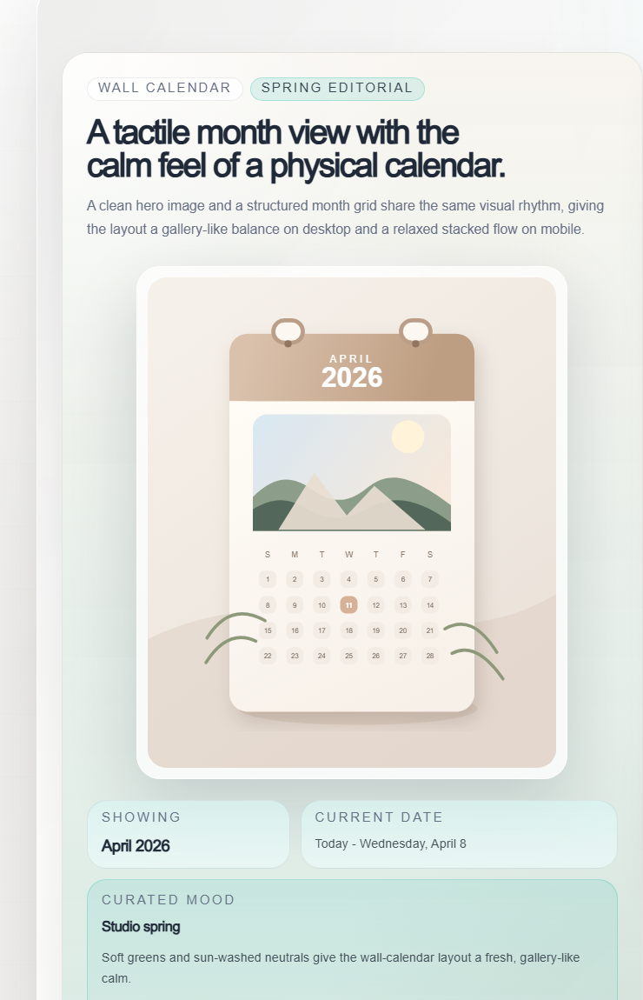
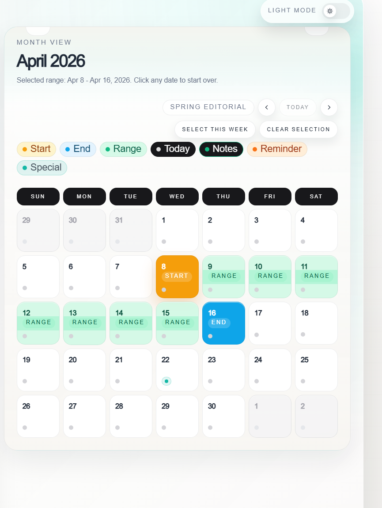
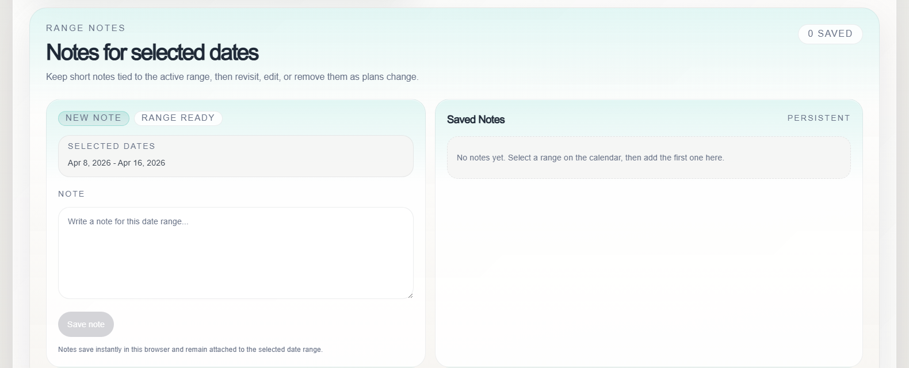
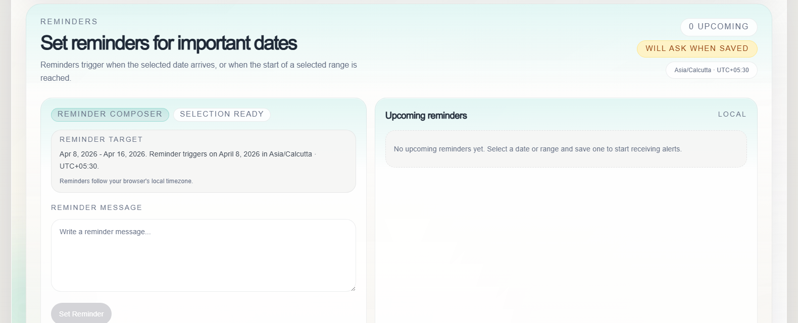

Interactive Wall Calendar Component
An enhanced version of the original wall calendar challenge, expanded with production-minded UX, advanced interactivity, accessibility support, responsive behavior, persistent notes, reminders, and premium interface polish.




Project Summary
This project began as a UI-focused calendar brief and was intentionally pushed into a richer product-style experience. The result is a wall-calendar-inspired month view that supports interaction patterns users expect from modern planning tools while keeping the design clean, balanced, and recruiter-ready.
Implemented Features
Calendar and Range Selection
- Wall calendar layout with hero image and month-view calendar grid
- Current month display with 7-column day grid and current-day highlight
- Click-based and drag-to-select date range interaction
- Clear start, end, and in-range highlighting
- Quick actions for Today, Clear Selection, Select This Week, and month navigation
- Smooth month transition animation with slide and fade behavior
Notes and Reminders
- Notes system with add, edit, delete, and localStorage persistence
- Reminder creation for a selected date or date range
- Reminder message support and upcoming reminders list
- Browser notifications with in-app alert fallback
- Timezone-aware reminder display and scheduling
- Calendar indicators for notes and reminders
UX, Visual Design, and Motion
- Responsive design for desktop, tablet, and mobile layouts
- Light and dark mode with saved preference
- Dynamic accent colors influenced by the hero image
- Framer Motion transitions for load, selection, panels, and month changes
- Sticky desktop notes workflow and smoother panel hierarchy
- Hover states, focus states, toasts, and premium feedback styling
Accessibility and Production Readiness
- Keyboard date navigation with arrow keys, Enter, and Space support
- Visible focus treatment and screen-reader-friendly labels
- High-contrast styling and dark mode readability improvements
- Edge case handling for reversed ranges and same-day selections
- Validation for empty notes, incomplete reminders, and permission denial
- Client-side persistence with maintainable TypeScript-based architecture
Design Decisions
Why the wall calendar concept was chosen
The wall calendar format creates a stronger visual identity than a typical date picker. It feels more editorial, more memorable in a portfolio, and still keeps the month view easy to understand at first glance.
Why localStorage was used instead of a backend
The challenge is frontend-first, so localStorage keeps the project self-contained, easy to review, and functional without requiring authentication, APIs, or cloud infrastructure.
How UX was handled
The interface was refined around real interaction quality: drag selection, quick actions, mobile touch targets, visible feedback, accessibility support, and clear fallbacks when browser permissions are limited.
Tech Stack
- Next.js 16 App Router
- TypeScript
- Tailwind CSS
- Framer Motion
- date-fns
- localStorage
Future Improvements
- Backend integration for cloud persistence and cross-device sync
- User authentication and personalized calendars
- Cloud-based reminders with reliable background delivery
- Multi-user collaboration and shared planning features